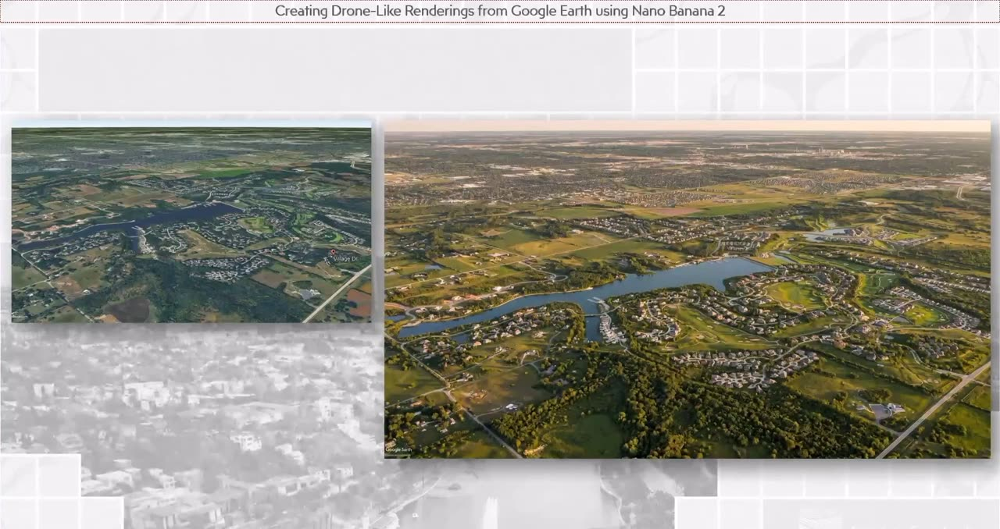
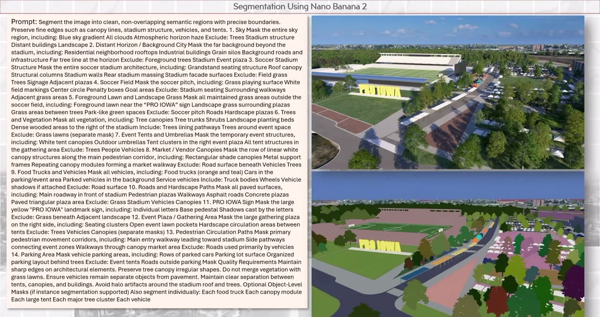
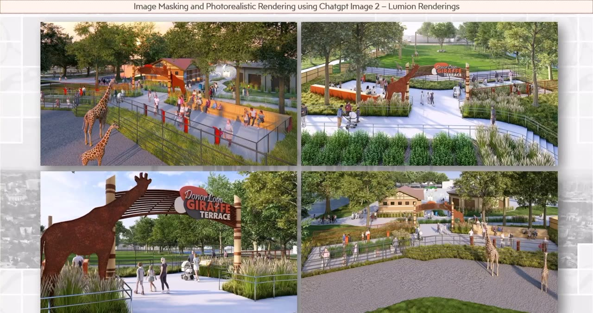
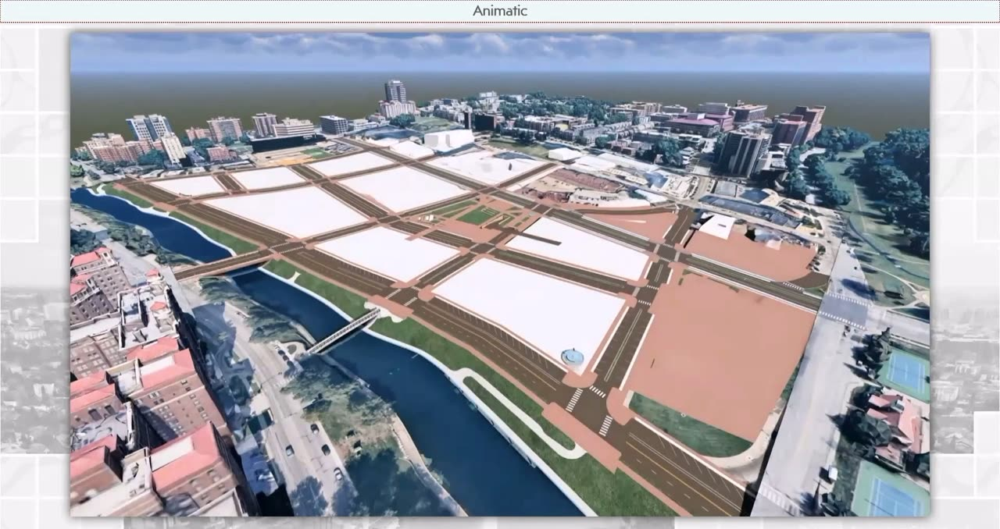
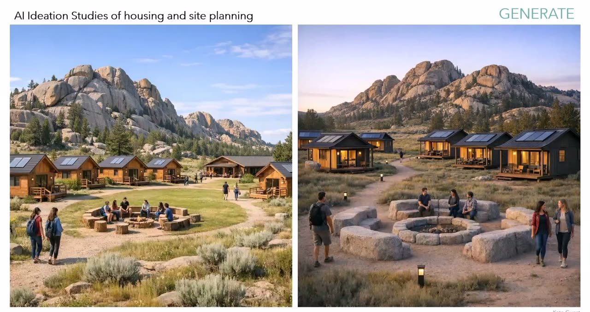
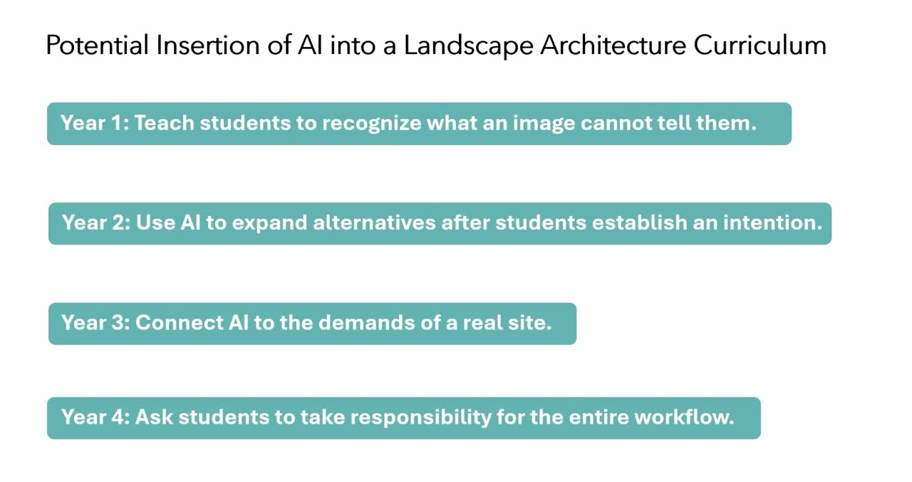
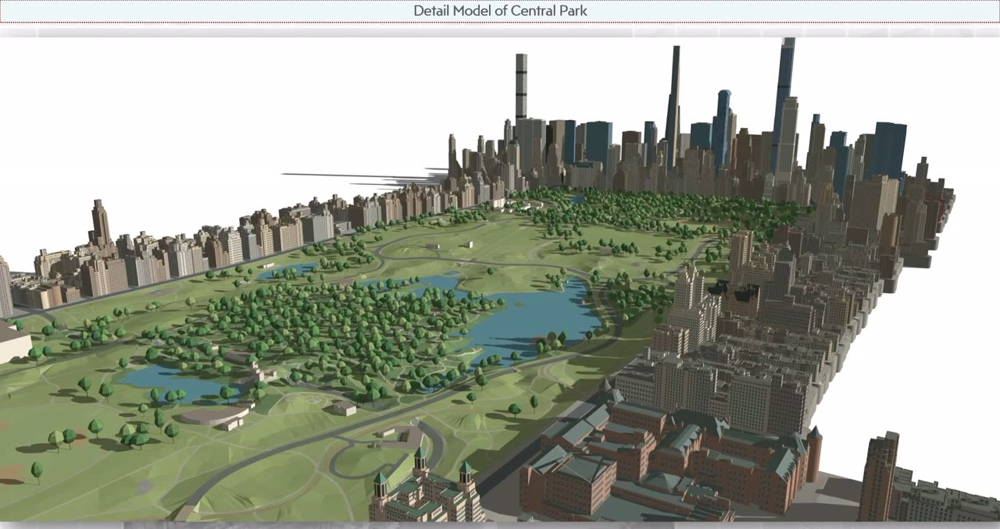
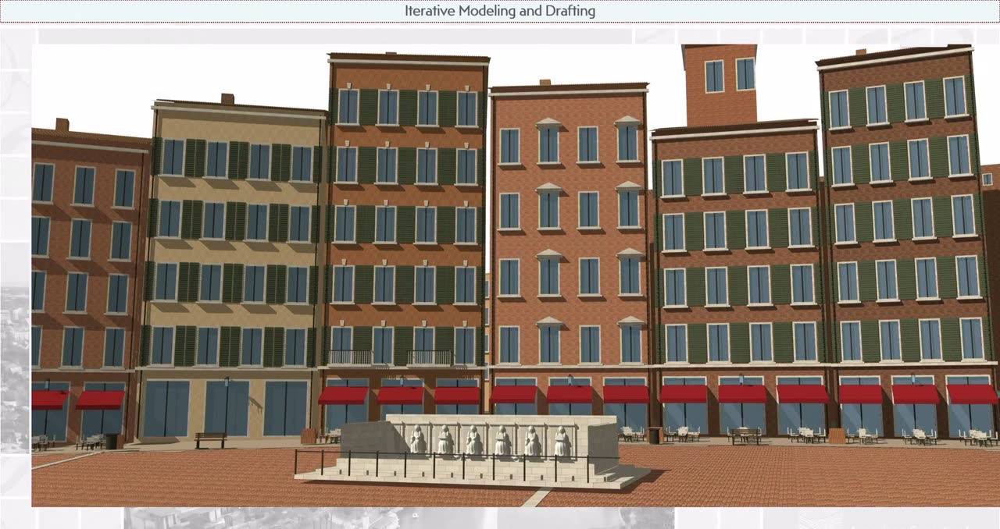
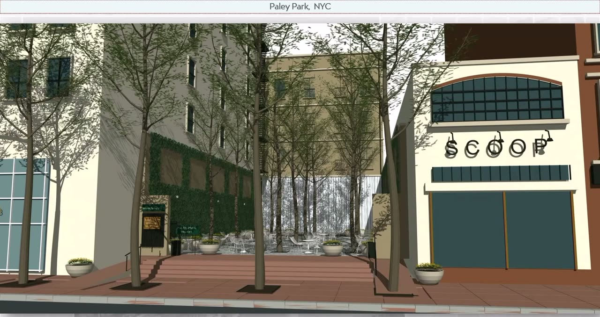

From the stage · ASLA National Conference 2026
AI in Professional Practice
Highlights from the talk behind AI in Practice: Boulder 2027.
Adapters, not adopters.
Daniel opened with a reframe. Landscape architects study how living systems adapt, and the talk asked the room to treat AI the same way: as a change to adapt to with care, judgment, and a clear eye on its costs.
In Boulder: S01, AI fundamentals ↗What a language model is, and why you check its work.
A large language model predicts the next word from patterns in enormous amounts of text. It does not think, and it can be confidently wrong. The talk's image for it: a blind zebra throwing a dart over its head and somehow hitting the bullseye. Most of the time it lands. You still check.
In Boulder: S01, AI fundamentals ↗The liability is on you.
Jenn, who gave the 2026 CLARB keynote on responsible AI use, made the professional case. Whoever uses the tool owns the result. Knowing enough to judge whether an output is correct, accurate, and usable is why licensure matters more now, not less.
In Boulder: S07, Responsible practice ↗AI builds the scaffolding.
Jenn's CLARB keynote went from a ChatGPT outline, to a designed draft deck, to a recorded talk, to a transcript, to a 3,000-word draft book chapter. Every step still took real editing. What changed was the speed to a first framework: about three weeks of work instead of three months.
In Boulder: S03, Research, writing, and proposals ↗Generative design: image prompting.
Jenn walked through the prompts behind real visualization work. Use AI to write the prompt for the image model. Describe the story the image should tell, the way you would brief a traditional rendering. Segment the scene so the design stays where it belongs.
A Google Earth capture became a drone-style aerial for a proposal. Simple massing became a street-level concept for a client to react to. A Lumion stadium render gained a crowd in minutes instead of a day.
In Boulder: S04, Generative design part 1 ↗


Generative design: video and animation.
The same approach extends to motion. A massing model, a few diagrams, and AI key frames were chained into a short animation, with AI also drafting the prompt for each transition. Rendered the traditional way, the sequence would have taken weeks.
In Boulder: S05, Generative design part 2 ↗
In the classroom.
Kelly Curl shared a four-week summer field studio at Colorado State University. Students walked the site, drew by hand, and did their research first. AI came in at the center to generate and test ideas, and the work went back into hand drawing and Photoshop at the end. Every iteration was a chance to ask why something did not look right.
Kelly also proposed a four-year path for AI literacy:
- Year 1: Teach students to recognize what an image cannot tell them.
- Year 2: Use AI to expand alternatives after students establish an intention.
- Year 3: Connect AI to the demands of a real site.
- Year 4: Ask students to take responsibility for the entire workflow.


Build your own tools.
Daniel is a landscape architect with no coding background. By describing what he needed in plain English, he built SketchUp tools for parking layouts, stairs and landings, and grading a path at a set slope, including where the retaining walls have to go. The question to start with: what problem are you trying to solve?
In Boulder: S09, Coding with AI ↗3D modeling with AI.
The newest models build working 3D models, not just pictures of them. From one prompt, a model researched and built Central Park with its topography and surrounding buildings in about 40 minutes. A custom SketchUp tool turns a photograph into an editable model, from a corner building to a single tree.
None of it is fully accurate, and all of it is editable. That is the review problem the Boulder session is built around.
In Boulder: S06, 3D modeling with AI ↗


What it means for practice.
Start with a person. Find someone on your team, or a recent graduate, and give them time to research this for the firm. Do not expect a return on the investment yet, because this is a change in how a practice operates.
The hopeful version closed the talk: if the tools take less time, how well you practice may matter more than how well you use the tools.
In Boulder: S13, Bringing AI into your firm ↗